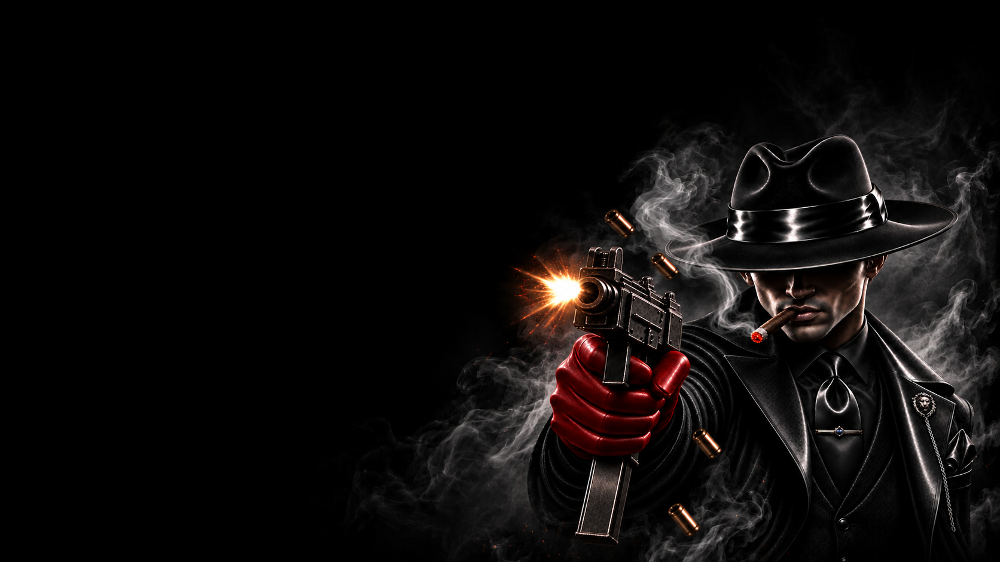

МАФИЯ · КОМАНДНАЯ
МАФИЯ
НОЧЬ ПРИНАДЛЕЖИТ
ИМ.
Мафия
Командная
Ночное убийство — каждую ночь участники Мафии совместно выбирают одного игрока, которого хотят устранить из игры.
Мафия действует единой командой. Ночью её участники просыпаются вместе и выбирают общую цель. Днём они скрывают свою принадлежность к Мафии, участвуют в обсуждении и голосовании наравне с остальными игроками.
Мафия должна прийти к единому решению. Если участники команды не могут выбрать одну цель, окончательное решение остаётся за Доном Мафии.
Не пытайся защищать своих слишком очевидно. Днём играй как мирный, создавай сомнения и направляй обсуждение так, чтобы подозрения уходили от команды.